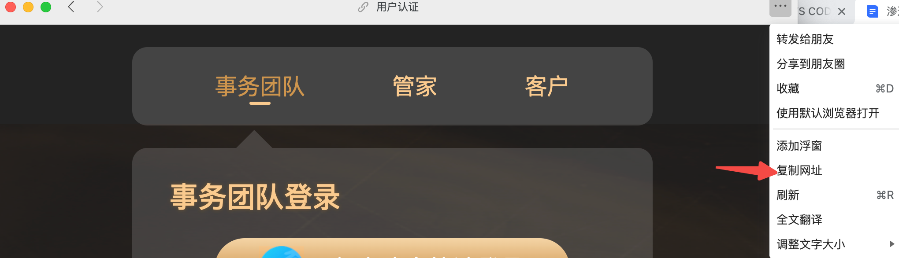
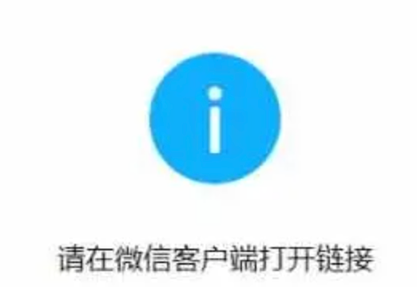
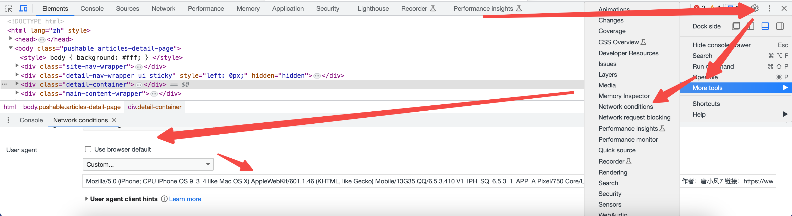
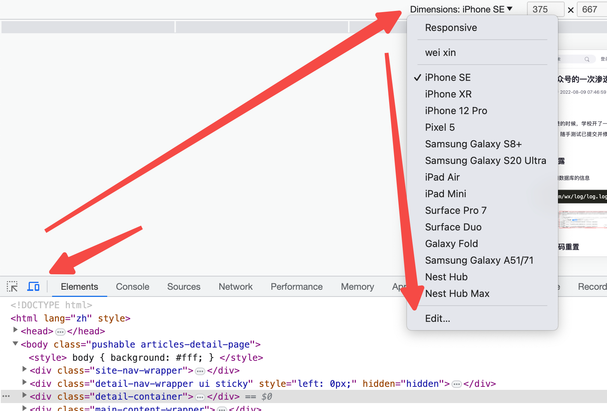
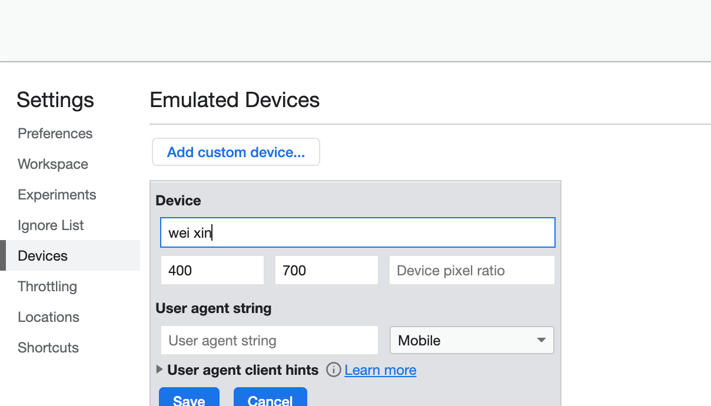

公众号渗透
目录
获取各url
右上角三个点
电脑端，可以从这里获取链接

vconsole
电脑端有些时候右上角三个点，点击后没有复制链接选项，可以点击右下角vConsole→Log找到url一行即可得到url
电脑端访问绕过
当我们直接把公众号里给的链接拿到电脑访问，可能会出现这种玩意（包括但不限于这种操蛋玩意）

我们得进行绕过
更改UA绕过
如果浏览器打开后会跳转到其他页面 或者 有弹窗提示，但是不会跳到open.weixin.qq.com域名去，就可以尝试UA绕过。
修改方式有两种： 1.F12→右侧三个点→more tools→network conditions→User agent→取消勾选Use Browser default→输入UA后刷新

2.F12→左侧第二个标识点击进入手机模式浏览→上方dimensions选中edit→add custom device→输入ua名（随便输，我输的weixin），然后输入ua，保存→dimensions里选择weixin即可切换ua


修改成如下ua（分别试试）（主要是检测ua头里是否有MicroMessenger字符，有些站ua只有个MicroMessenger也能绕过）
Mozilla/5.0 (iPhone; CPU iPhone OS 8_0 like Mac OS X) AppleWebKit/600.1.4 (KHTML, like Gecko) Mobile/12A365 MicroMessenger/5.4.1 NetType/WIFI
Mozilla/5.0 (Linux; U; Android 4.1.2; zh-cn; Chitanda/Akari) AppleWebKit/534.30 (KHTML, like Gecko) Version/4.0 Mobile Safari/534.30 MicroMessenger/6.0.0.58_r884092.501 NetType/WIFI
绕过oauth
如果我们把ua改了，发现页面变成纯白色，请用微信客户端打开的字样也没了，那么就有可能通过绕过oauth来访问。
//todo,不过有下面两个解决方案了，也不是那么急
clash+whistle
clash开全局代理，然后把流量全部导到抓包工具（whistle）进行分析。 为什么不用burp呢？因为我mao在burp可能会遇到一些证书问题导致打不开网页。
保存为yml(macos是yaml）导入到clash
proxies:
- name: Whistle
type: http
server: 127.0.0.1
port: 8899 #根据抓包工具配置
proxy-groups:
- name: Proxy
proxies:
- Whistle
type: select
rules:
- PROCESS-NAME,node.exe,DIRECT
- PROCESS-NAME,WeChatAppEx.exe,Whistle
- PROCESS-NAME,WeChat.exe,Whistle
- PROCESS-NAME,WechatBrowser.exe,Whistle
- MATCH,DIRECT
可以在rules里加 -DOMAIN,xxxx,DIRECT 来屏蔽一些垃圾包
然后启动whistle就能抓包了。
clash+burp
一样的，就是把clash代理端口改成burp的。可能会遇到证书问题，不能用就上whistle吧。
proxies:
- name: burp
type: http
server: 127.0.0.1
port: 8080 #根据抓包工具配置
proxy-groups:
- name: Proxy
proxies:
- burp
type: select
rules:
- MATCH,burp